Intimate
Traditional / Elope
Ceremonies and elopements
$1,950
For smaller, shorter celebrations
- 1–4 hours of coverage
- One-hour wedding film
- One-minute highlight video
- Your films on a flash drive
The Unkwn Wedding Palace
Wedding films from Maryland to wherever you say “I do.”
The art of remembering
There are moments you plan for, and moments you never see coming. A quiet look before the ceremony. Your family’s laughter. The way the room changes when the music starts.
Back to the vows.
Back to the first dance.
Back to everyone who was there.
Curated services
Traditional, modern or destination: every celebration gets a film made for it.
Atlanta, Georgia
The color, the culture and the ceremony of a traditional wedding, kept just the way it felt.
Cincinnati, Ohio
A stylish, modern celebration, filmed with the same care the couple put into planning it.
Miami, Florida
Full-day coverage for VIP and destination weddings, wherever the celebration takes you.
Meet the filmmaker
I’m Prince, the filmmaker behind The Unkwn Wedding Palace. For more than eight years, videography has been my passion: weddings, private celebrations and elopements, close to home and wherever couples need me to travel.
Bring me your vision, the shots you’ve pictured and the traditions that matter to you, and we’ll work closely together to film the day the way you’ll want to remember it.
Kind words
“Prince made us forget the camera was even there. When we watched the film, we cried all over again.”
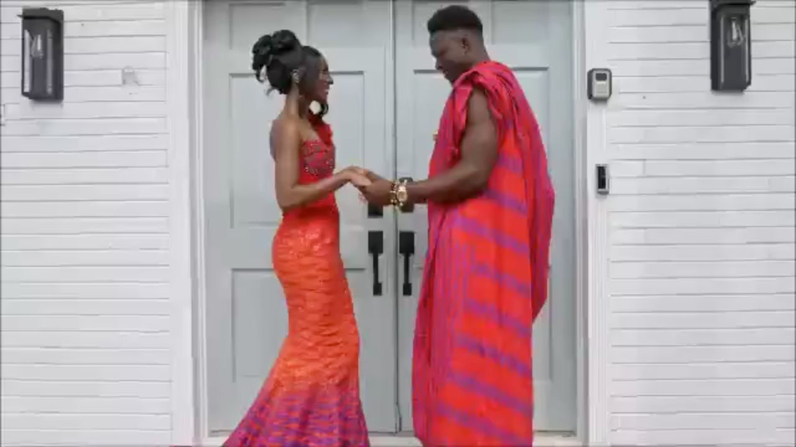
“Calm, organized and somehow everywhere at once. We never had to think about him, and he never missed a thing.”
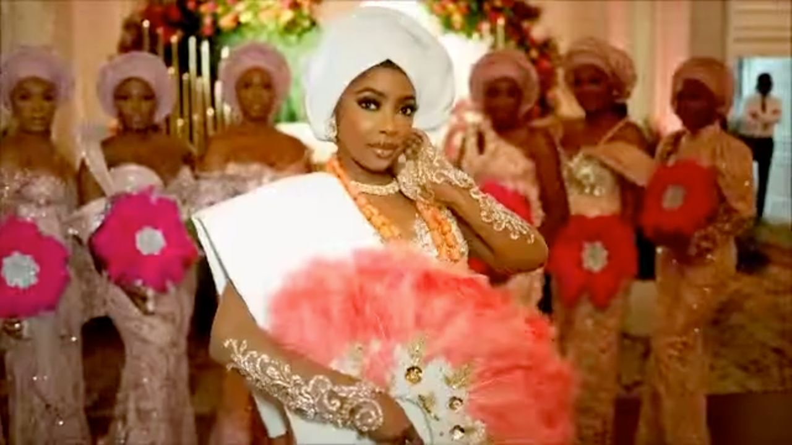
“Our families still talk about the highlight film. Every tradition, every dance, every face.”
“He asked about our story before he ever talked about shots. You can feel that in every minute of the film.”
“Delivered on time, and better than anything we imagined. We’ve already sent it to everyone who couldn’t make it.”
“We flew him out for our wedding abroad. Best decision we made all year.”
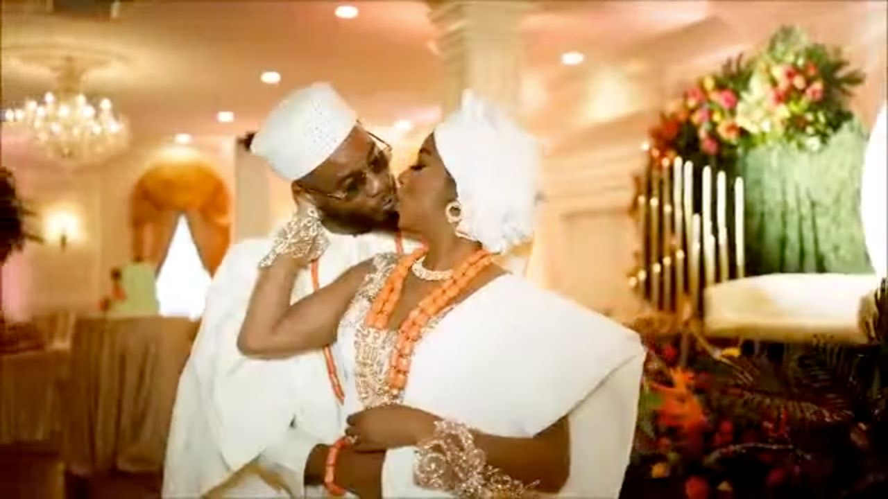
“I’ve watched our film more times than I can count. It sounds and feels exactly like that day.”
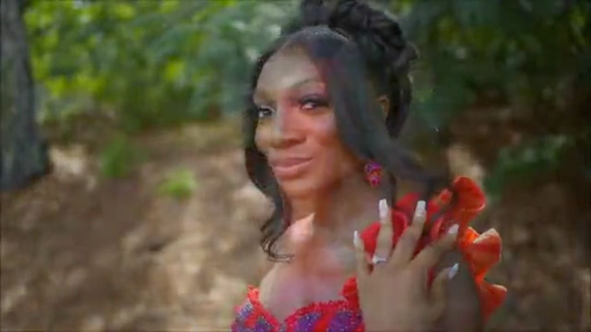
Investment
Every package includes a full-length wedding film and highlight videos you can download and keep.
Intimate
Ceremonies and elopements
$1,950
For smaller, shorter celebrations
Most popular
The whole wedding day
$3,600
The package couples pick most
Full day
Traditional and modern, anywhere
$9,000
Three videographers
Small events, brand shoots & lifestyle
Birthdays, intimate gatherings, brand shoots and corporate events, filmed with the same care as a wedding day.
Get started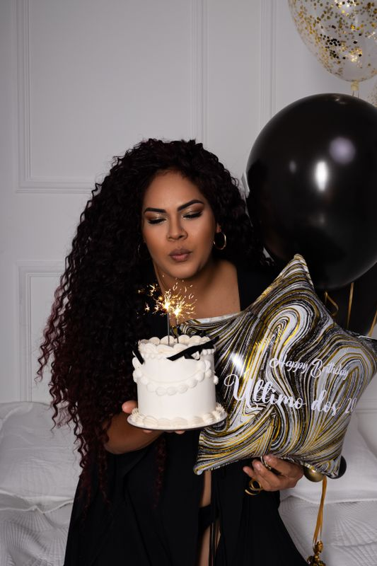
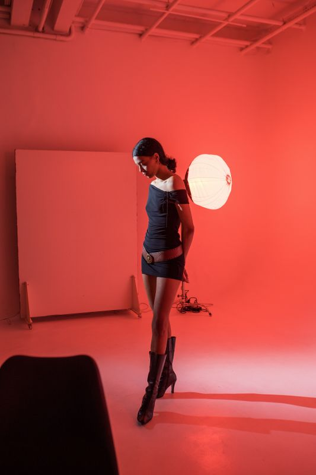
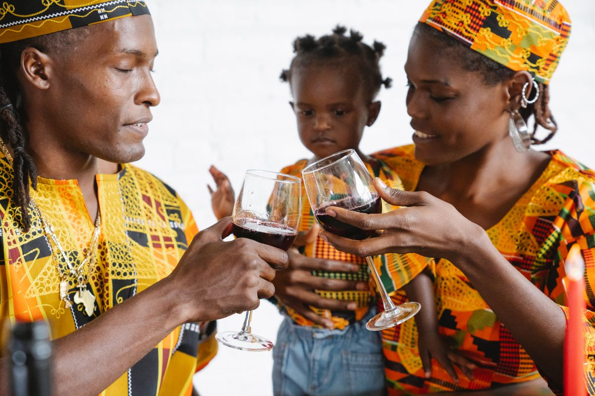
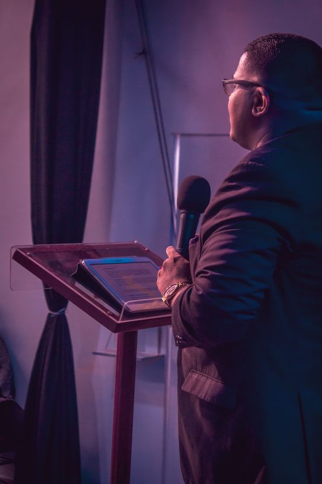
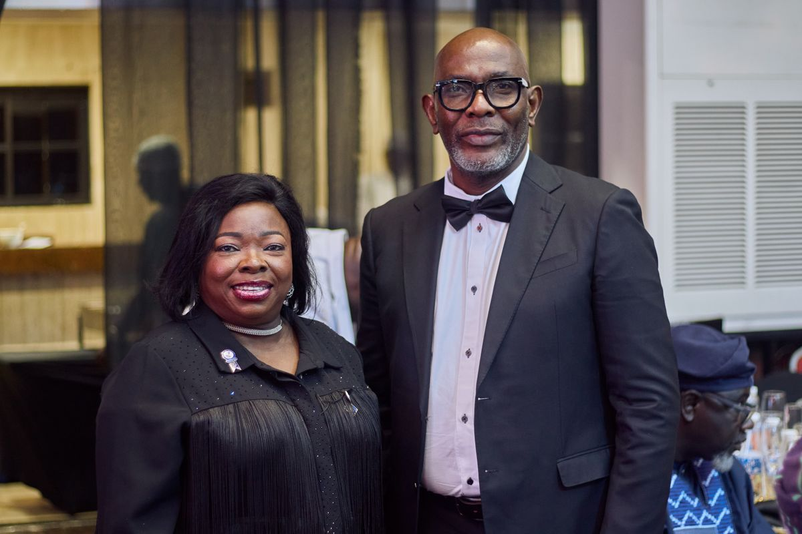
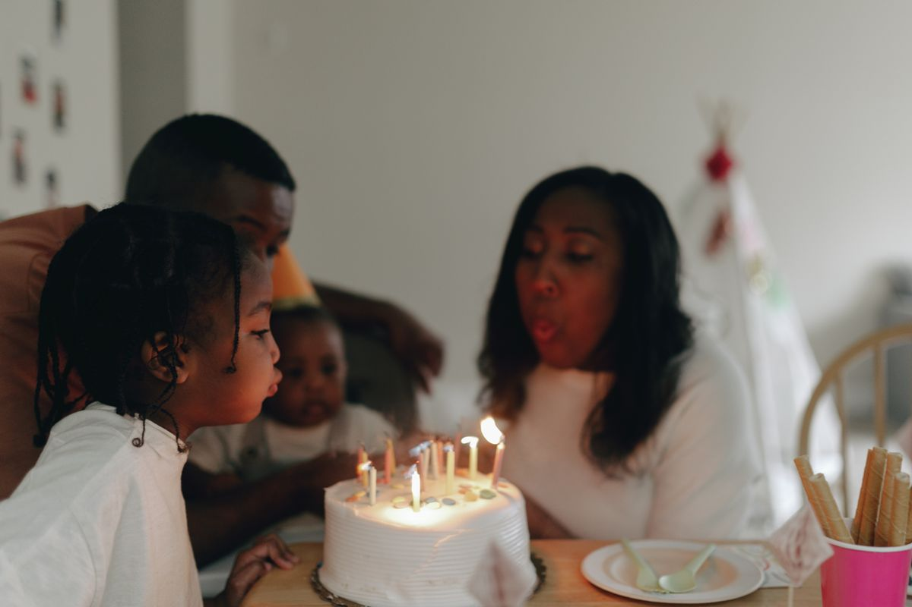
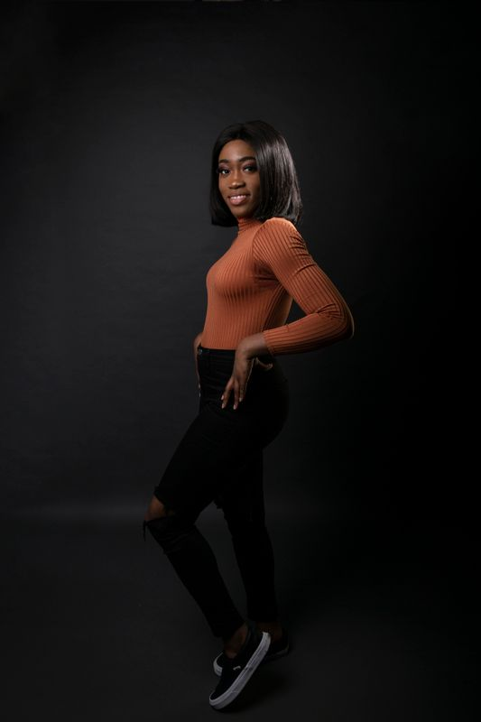
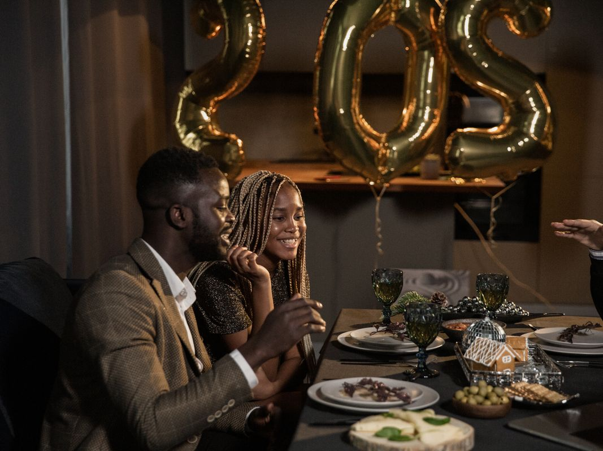
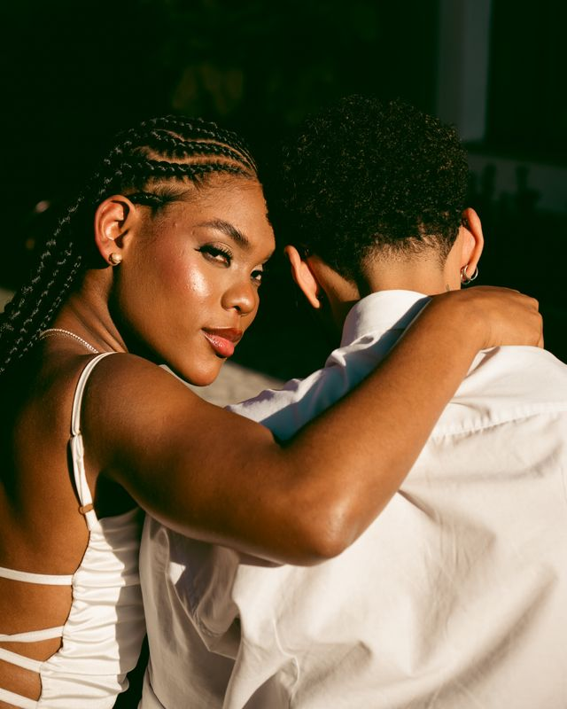
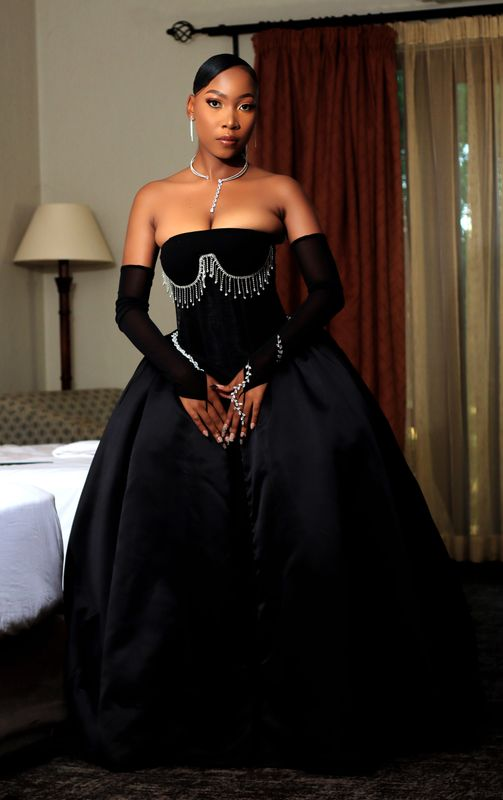
Questions
The things couples ask most, answered by Prince.
Yes, but videography and cinematography are my passion. I can recommend several great photographers I’ve worked with, and you’ll love them.
Not at all. I also film brands, birthdays, events, lifestyle and more.
Yes, I travel for weddings. I also specialize in private weddings and elopements.
Absolutely. Share your vision and preferences with me, and we’ll work closely together to capture the moments and atmosphere you want.
Every package includes a full-length wedding film and highlight videos you can download and keep. Hours of coverage, crew and extras like drone footage depend on the package; the details are in Investment above.